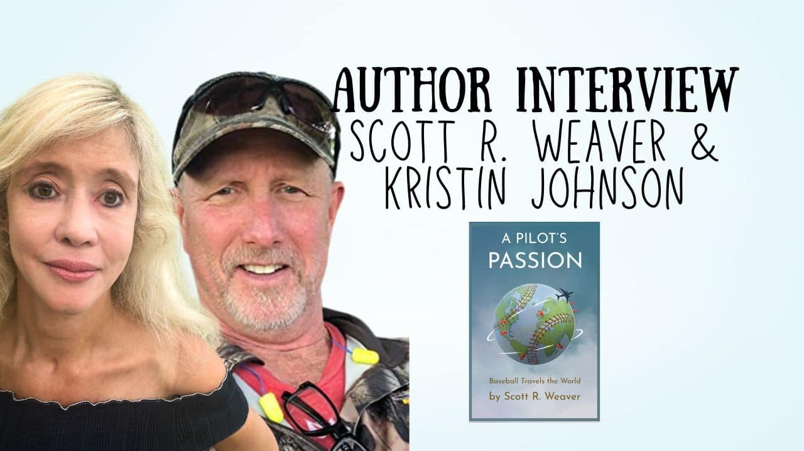

Author Interview – Scott R. Weaver and Kristin Johnson – A Pilots Passion
By Scott Weaver | July 3rd, 2022

On The Table Read, “the best book magazine in the UK“, authors Scott R. Weaver and Kristin Johnson talk about their book, A Pilots Passion, about the life of a pilot travelling the world, and a love of baseball.
JJ Barnes editor of The Table Read online creativity, arts and entertainment magazine
Written by JJ Barnes
Trending
Author Interview – Claudia Clark – Dear Barack: The Extraordinary Partnership of Barack Obama and Angela Merkel
www.jjbarnes.co.uk
I interviewed pilot and author Scott R. Weaver and his co-author, Kristin Johnson, about their new book, A Pilots Passion, what inspired them to write it, and their creative writing process.
Tell me a bit about who you are.
Scott: I’m originally from Albuquerque, New Mexico, where I went to high school and received a scholarship to play baseball at the University of Colorado-Boulder. I later received a Bachelor Science degree in Business Administration and a minor in Computer Science. After graduation, I received my pilot’s license in Northern California with my 75-year-old grandfather, Leo Purinton, as my instructor.Two years later, I joined the US Air Force where I became a T38A instructor pilot and later transitioned to the F16C. I started in Oklahoma, later transferred to Arizona, and finished up in Germany. In 2004, having accessed over 2,800 hours as an instructor and fighter pilot, I retired as a Lt. Col.
In 1991, I was hired by American Airlines where I am currently flying the 777-200 mainly to London, Frankfurt, New Delhi and Incheon, South Korea.
I currently reside just outside Washington D.C. in Potomac, Maryland. I am married to Gretchen who is a Federal attorney with the National Institute of Health and have three children. Jonathan (34), Sybille (31) and Lianne who is 15 years old and a rising sophomore in Churchill High School.
Kristin: I’m originally from Michigan and I’ve lived in California for half my life. I have a Master of Professional Writing degree from the University of Southern California and a bachelor’s in writing from the University of Michigan. I’ve traveled in Asia and abroad and done research trips. I’ve worked with people all over the world from the US and Canada to Trinidad and Tobago to Japan.
I write fiction, nonfiction, and screenplays. I’m a prize-winning/ prize-finalist writer, blogger, ghost-writing/creative writing consultant, screenwriter, and editor. I’ve published/collaborated on several books and co-produced, for the Palm Springs Women in Film Filmmakers Lab, two short films, “Accidental Date” and “Aftermath,” which have been award winners, award finalists or semi-finalists in several film festivals. I provided a link to “Accidental Date” in the links.
I’ve adapted several books to screenplays/teleplays including THE LAST MOON by DeAnn Lubell. I’m a member of the Desert Screenwriters Guild, an officer of World Game-Changers, and a member of Palm Springs Women in Film and Television. I also work with the Happy Guy Marketing as a ghostwriter, which is how I met Scott.
When did you first WANT to write a book?
Scott: Writing my first book came to me later in life. As I mentioned, I am a third-generation pilot by trade and history buff as a hobby. My dad, RC “Doc” Weaver, was a 20-year USAF pilot and Vietnam veteran. My grandfather, Leo Purinton, was a pilot for well over 50+ years starting in 1927, continuing through WWII and later as a manager and owner of a small airport.When my grandfather passed away, I inherited a couple of boxes full of his flying gear, memorabilia, logbooks, photos, and letters written to him by cadets. As a World War II instructor, he trained in a place called Thunderbird Field just outside the Phoenix, Arizona area.
And as I started researching the family material, letters, and historical data I naturally took notes. Nothing formal or structured. My intent was originally just to document some family history, but it then quickly developed into a non-fiction historical story not only about my grandfather, but some of the great people that organized, invested in, and built one of the largest aviation training facilities in the world.
My first book is basically nonfiction, but I needed a hook. So I told a story to my young daughter, Lianne on one of my airline trips which happened to be going through Phoenix, Arizona and I gave her a bit of a background on what had happened back in the 1940s.
Kristin: When I was a preteen. I wanted to write an historical romance, of all things. It was never finished. I did do a fantasy/sci-fi unpublished novel. My second published book was a sexy literary love story.
the best creativity magazine in the UK, the best book magazine in the UK, the best arts magazine in the UK, the best entertainment magazine in the UK, the best celebrity magazine in the UK, book marketing UK, book promotion UK, music marketing UK, music promotion UK, film marketing UK, film promotion UK, arts and entertainment magazine, online magazine uk, creativity magazine
When did you take a step to start writing?
Scott: Well, that’s kind of funny. I was over the jungles of the Amazon in the middle of the night, just starting to write down some ideas on my first book, The Pilots of Thunderbird Field. I was flying primarily out of JFK, Miami to Buenos Aires, Argentina. And most, if not all, these flights are “all-nighters” trips.I started jotting notes down on anything I could put my hands on, especially a 3×5 card and yellow notepads. I was doing what most historical researchers do, and that is just writing down information as it came to me in no particular order or structure. After a few months, I had over 100+ pages of notes, when someone suggested making a book.
Kristin: I’d been writing short stories, poems and plays as a kid, but I truly started writing when I was a preteen, with that unfinished historical romance, and decided to write a novel. I’d written short plays, short stories, and a few poems, but writing a novel took it to another level.
When I was at the University of Michigan and the University of Southern California it became a career for real. Although I’d written articles for newspapers and I’d published poetry, I took the leap to professional writer at the Master of Professional Writing Program.
How long did it take you to complete your first book from the first idea to release?
Scott: For me, I think it was about two years from the time that I started jotting down notes until I actually had a book. I rushed the first book a little bit because I wanted to get the book out for my dad’s 85th birthdayOnce I published the book and presented it to my dad and the rest of the family, I went back and did some edits and actually had a good friend of mine, Jerry Yellin, a World War II P-51 vet, write my foreword for the first revision.
Kristin: For Butterfly Wings, my first published book and first novel, it took two years. I started writing it as a class assignment in writer Shelly Lowenkopf’s Literary Types in the Master of Professional Writing Program at the University of Southern California. It was a sexy literary love story. I had an idea about the complicated love between a former fashion model and a sculptor/artist.
Shelly Lowenkopf wanted me to finish it after I’d completed the class. I finished it, workshopped it with fellow writers, and published it with iUniverse in the year 2000.
How long did it take you to complete your latest book from the first idea to release?
Scott: I would say my second book was about 18 months and was published in February 2021. Experience and wisdom are a fantastic time saver. I was much smarter in terms of building a team of great “wingman” to help support me through the project.A Pilots Passion by Scott R. Weaver on The Table Read A Pilots Passion Kristin: Scott and I had worked together when he approached me through the Happy Guy Marketing and I consulted on his script “Forgotten Ally,” helping him shape the rewrite. I loved that it was based on his daughter Lianne in a way. He first contacted me with the idea in April 2020, one month after we were all in lockdown. It was released February 2021. “Hurler” as I call him was very driven!
Focusing on your latest release. What made you want to write A Pilots Passion?
Scott: My latest book, A Pilot’s Passion, is a collection of stories from different people that I met traveling around the world as an airline pilot and also playing baseball. At the time those were my two passions in life, aviation and baseball. And as I started collecting some of these stories, I had a couple of several concepts on how I wanted to structure the book.One of them was I wanted to get those individuals stories on paper, because they were intriguing to me. What possessed someone to play baseball in Buenos Aires or in London? Or how do you start a professional league in Argentina or how as a British citizen do you end up coaching the national team for Great Britain?
The underlying story was about my son and me understanding difficulties of mental health issues and bipolar and how we used baseball to connect and communicate as a family.
Kristin: When he approached me and The Happy Guy Marketing again, I happily jumped at the chance to help him put this baseball book together. It seemed like the perfect uplifting project during the pandemic. It was about travel and baseball and keeping a positive attitude or “rise and grind” despite challenges—which we needed when travel and events like baseball were closed off and keeping a positive attitude was necessary.
As mentioned, Scott and his son Jonathan “Jo” Weaver generously shared Jo’s struggle with bipolar disorder right in the beginning of the book. They opened their hearts. It made me cry. It may help someone who is dealing with bipolar disorder or mental illness. Baseball, as Scott and Jo (also known as Jon) write in the book, helped them connect. Scott formed the Father-Son Baseball Classic, which would have been played in England if not for COVID-19.
Half the stories in the book touched my heart because even if you are a casual baseball fan, striving for something bigger than yourself and taking risks to follow a dream are universal.
What were your biggest challenges with writing A Pilots Passion?
Scott: It was a collaborative effort from everybody from around the world to get their pieces written and submitted. KJ had helped edit and start building the structure. I think that was our biggest challenge. But the hardest part I think, was just organizing the different writers and trying to get them to submit their materials on time.Kristin: As Scott says, we had several contributors from all around the world—seasoned baseball players who are busy (although they were thrilled to be involved). Coordinating that was a challenge. Getting the right structure was a challenge.
Halfway through we realized (and got some feedback) that we didn’t have a female player featured. One of our people, David Burns of Baseball Jobs Overseas, introduced us to international softball player Lisa Maulden, currently on the board of Baseball Jobs Overseas. Lisa filled out our Asia section of the book because she has played with the Ogaki Minamo Softball Team and is playing another season in Japan.
We also had to make the chapters even in length, so we needed to cut down some of the chapters.
What was your research process for A Pilots Passion?
Scott: Again, I’ve written two books. The first book was more of a historical background with some personal data where I did most of the research. I overlapped and read anything and everything I could especially about the Sin- Pacific War. That is the Chinese connection to World War II.We seem to have a European centric type of historical background when we go through the public systems here in the state. But I spent a little bit more time trying to study and understand the Chinese side of that history because my grandfather had instructed some Chinese cadets, maybe about a dozen cadets, and of course those were in his logbooks. I found that really insightful and really easy to tie in some of the historical data in research for the first book – Pilots of Thunderbird Field.
The second book was just from my personal background and friendship developed over a decade. A Pilot’s Passion was more of a storyline of how I met these individuals around the world.
Kristin: Scott selected many of the players to contribute chapters, and I did have to research some of the baseball terms. I also asked specific questions of everyone when I needed to fill in gaps—for example, Pablo Tesouro and Paul Perry (both playing baseball in Argentina.) So, a lot of it was interviewing.
How did you plan the structure of A Pilots Passion?
Scott: The structure didn’t really come along until KJ and I shared a few couple ideas on how we wanted to structure the book and the overall direction we wanted to lead our readers. It wasn’t anything that we really set out to decide at the beginning of the book, but something that we developed as the book progressed and as we got closer to the conclusion.Kristin: And we at first placed the articles by Scott and Eric “Lefty” Niesen at the end of the book but then we thought they would be more valuable placed in-between each chapter to illustrate the messages and concepts. Our readers and feedback helped us immensely in this. Then we organized the stories by region—Europe, South America, and Asia. That was easy. We added Scott’s stories of his adventures in London, England, Buenos Aires, Argentina, and Narita, Japan.
Kristin Johnson, Kingdom of Treasures, The Table Read Kristin Johnson
Did you get support with editing, and how much editing did A Pilots Passion need?s
Scott: As a former fighter pilot, I was trained the concept of “never fly solo” or how to rely on your wingman. That concept or mindset can be applied to writing and most other endeavors. KJ was my main wingman on this project, and I can honestly say that I would not have been able to complete the mission or project without her help. I’ve got a lot of editing and KJ was very, very helpful in helping with the editing of the book. Again, I’d mentioned the writing, the structure of the book.Besides KJ helping out with editing the book, I had family members. My mother-in-law has a PhD in education, and she was a great proofreader in terms of just taking a look, making sure we had all the typos and spacing errors.
When there’s a collaboration that goes back and forth there’s opportunities to really drop the ball on some things. And I learned that from the first book that you want to start that proofread and editing a lot sooner in the process to avoid some of those mistakes.
Kristin: I will be Scott’s wingman anytime. We needed an additional review—everyone does! I don’t care if you are Tony Robbins or Jon Krakauer—everyone needs editing and several sets of eyes. We went through many reviews! A million thanks to Scott’s amazing wife Gretchen as well as his mother-in-law Andrea, who helped and commented.
What is the first piece of writing advice you would give to anyone inspired to write a book?
Scott: My first bit of advice to potential writers who are thinking about publishing their first book is simple. Just write. Transcribe your thoughts on to paper even if it’s using a recording device. Get your ideas and thoughts out there and worry about the structure, grammar and edits a later time. Secondly, you never go “solo” on a writing project, so start building your team of wingmen as soon as you can. Seek them out. They’re there!Kristin: I echo that! As for actual writing, the title of a recent book comes to mind: Start Now Get Perfect Later. Just write, like Scott says.
Can you give me a hint about any further books you’re planning to write?s
Scott: I’ve got some books in my head that haven’t been put pen to pad. Also, I’ve written a couple of screenplays for a full feature in a short and I’m still flying for American Airlines. As time permits, I’ll go back and start editing or start working on some of the scripts. We’re actually working on some marketing research for a movie script called “The Forgotten Ally”.Right now, I’m trying to get a little bit of additional information on what direction we want to go. Just a quick overview. It’s a movie that is in support of Taiwan. So, with the Russian invasion of the Ukraine and the political correlations and the parallels with Taiwan, it was in my mind, time to dust off the script and see if there’s something that we can bring it up to speed that’s relevant in today’s news. So that’s the latest project, and it’s called The Forgotten Ally.
I have a concept trailer and I’ll include the link at the end of the article. I’d love to get your readers comments.
Kristin: I’m always working on lots of book projects—my own and with clients. I just finished contributing to the Speaking From Our Hearts series of books from World Game-Changers. All ten volumes. I’m planning to work on the third book in the Kingdom of Treasures series with Asmaa Jamil. I also may do an updated edition of Ain’t “U” Got No Manners. I’m also working on the storyline for a novel with my nephew, a university student. I’m wrapping up the first draft of a client script and a rewrite of another. And I’ve finished the rewrite of a fantasy novel I did with a client.
finally, are your proud of your accomplishment? Was it worth the effort?
Scott: I was very happy and proud to see A Pilot’s Passion make it to number one on Kindle downloads on books about baseball and number two on travel and number three on adventure. It’s a team effort. It’s a collaborative effort.But in writing, like being a fighter pilot, it’s not always about being the solo fighter pilot sitting in a jet by yourself. You have wingmen around you that support you, check your six and ensure the project is moving forward. I know I got smarter in terms of building a really good team. I think that’s what I’m most proud of is building a good, successful team of wingmen to support our efforts in getting my second book out there and I hope to be able to lean on those wingmen in the future for any other writing projects.
Kristin: I’m happy to be his wingman! I’m incredibly proud of it and it was worth the effort. As Hurler says, the week of February 24, 2021, the book reached #1 on Kindle in baseball biographies, #3 in Travel Biographies and memoirs, #4 in Adventurer and Explorer Biographies. Also, working with Scott is always wonderful. Massive respect to Hurler and his whole family.
Pop all your book, website and social media links here so the readers can find you:
Scott:Visit My Website
Pilot's Passion on Amazon
Scott Weaver on Amazon
Watch Video on Vimeo
Pilots of Thunderbird Field on Amazon
Kristin Website:
Best professional book writers for hire
About Me

Scott Weaver is a public speaker, author, pilot, aviation historian and retired Lt. Col. USAF.